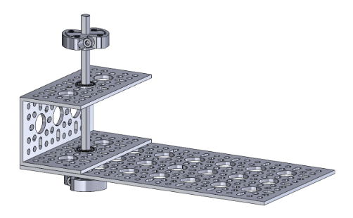
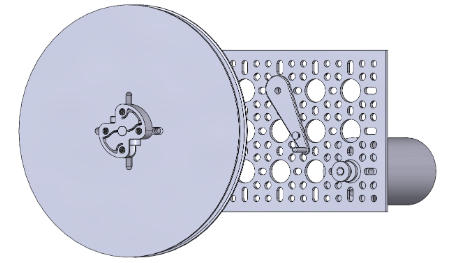
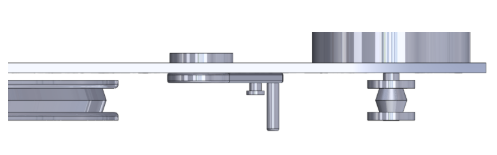
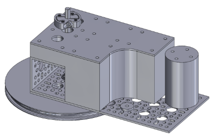
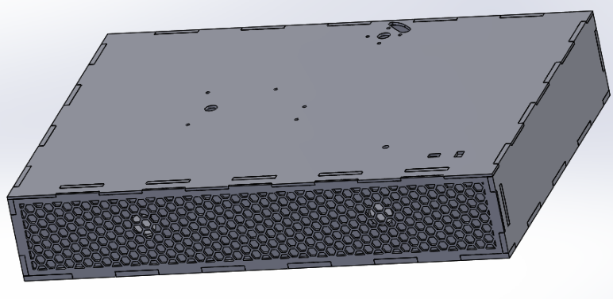
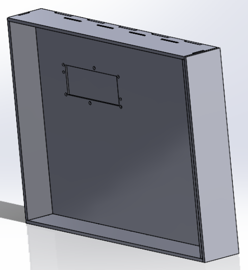
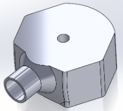
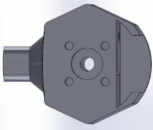
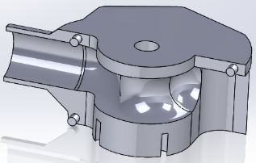
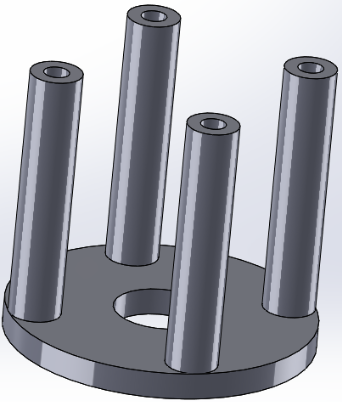

Mechanical Systems Description
Drivetrain Design
The first decision made with the drivetrain was to make it a self contained unit to make it easier to service, tune and optimize. Once this was decided, the next priority was ensuring that its operation was smooth and quiet. The frame, driveshaft, bearings, and shaft mounts were sourced from goBILDA, a company that produces very high quality components for FTC robots out of aluminum and steel.
These components would provide excellent performance and a sturdy base to build upon. Next it was time to select a drive motor. We were looking for a balance between good performance, good endurance, quiet/smooth operation, affordability, and compatibility. While a brushless motor was tempting for its near silent operation and compact size, brushless motors are more suited to high RPM tasks and require separate motor controllers to function properly. We ended up finding a suitable 12 volt brushed DC motor on Digikey. It was extremely overkill in terms of its torque and speed ratings, but this meant we could run it for long periods of time without worrying about stressing the motor or arduino. To transfer rotation between the motor and driveshaft, we used a pulley and belt system, which allowed us to choose the reduction ratio by changing the diameters of the wheels. The system is geared down 18:1, giving the output more torque and letting the motor run at a smooth speed. We also added an arm that would keep tension on the belt and increase the contact between the belt and the drive wheel. Each of these components were 3D printed.
 Additionally, when dealing with flat belts, it is necessary to give the pulleys a convex conical profile to keep the belt centered and prevent it from slipping off the wheels. Finally, the drivetrain needs to mount onto the box in a sturdy way. A large brace was 3D printed that fit onto the drivetrain, acting as a buffer to clear the motor height and provide mounting holes that corresponded with the top face of the box.
Box Design
For the design of the lower half of the full structure, we first needed to roughly plan out the dimensions of this section. We knew that A: The top face must have more than enough room for a 12 inch record, and B: The lengths of each side must be proportional to that of a suitcase. This led to us deciding on a length (side wall) of 16 in and a width (front wall) of 23 in. When deciding on the overall height of the box, its effect on the record player's aesthetic was an important factor to consider. We may have been more comfortable doing a height of 7 or 8 inches, but for the sake of maintaining good proportionality, we decided to challenge ourselves with an overall height of 6 inches (4 for the lower half, 2 for the lid). We then decided that there needed to be a wall dedicated to the speaker(s) that would be placed closely behind the front wall. This was also an aesthetic decision. If the speaker(s) extended past the front of the box, it would be too distracting and not mesh well with the design we were going for.
Next, we needed to decide on the wood thickness for each wall involved. We knew that the left, right, back, and bottom walls needed to be ¼ in wood, but some more thought needed to go into the rest. We decided on ⅛ wood for the top (face) wall, because we were aware that it would be frequently attached and removed during testing. We decided that the front wall with the hexagonal cuts needed to be ⅛ in wood for the pattern to be appealing while not disrupting the audio passing through. This led to the speaker wall needing to be made from ¼ in wood to maintain consistency on the front side with the other standing walls. When creating the record player's lower structure, the use of finger joints was pivotal to assuring that it'd be robust enough to support the weight of everything attached to it. Finger joints were used on every side of every wall in this section of the record player.
The most important part of the record player box is the lower inside face. This is where the buttons, arm, and record are located. This is the upper face of the image shown at the top of this section. The 4 holes surrounding the large hole near the top of this piece are for mounting the arm support beneath this part. The oddly-shaped cut that's also near the top of this piece allows any wiring to go into the box with the rest of the electronics (and aligns with the back of the arm base to show as little wiring as possible). The small cuts near the bottom right corner are for the buttons to friction fit into. The large hole is for the bearing, which supports the main shaft spinning the vinyl record. The smaller holes near this hole are for mounting the drivetrain beneath this part. The cuts near the bottom of this part (above the joints) support the speaker wall by fitting with its joints.
Regarding the back wall of the record player below, the 2 sets of 3 holes are for the two hinges that are used to open and close the lid. The rounded square hole close to the bottom is allotted for the main power supply cord.
The top of the lid is pictured below, as if the record player box was open. The holes are for the digital display.
Arm Design
The arm base has a hole starting from its top face that cuts through completely. This hole is allotted for the shaft that this base rotates freely about.
On the bottom face of this base, there are 4 holes and a cavity that are used to mount the sonic hub. The sonic hub is used to keep this part attached to the shaft robustly.
In the front of this part, there's a hollow, cylindrical extension which the tube carrying the cartridge wiring fits into. Lastly, the swept cut that goes around the top hole is solely for carrying the wires through the base and out the back while keeping them hidden.
Below is the piece at the end of the arm's shaft that the cartridge connects to. The cartridge was friction fit; a.k.a. fits well enough that it stays without the need for adhesives. The cylindrical section behind the cartridge holder allows this part to be friction fit into the shaft and carry wires discretely from the cartridge to the box.
The part above attaches beneath the face of the box and provides support for the shaft that allows the arm to spin.
The system as a whole is pictured here: